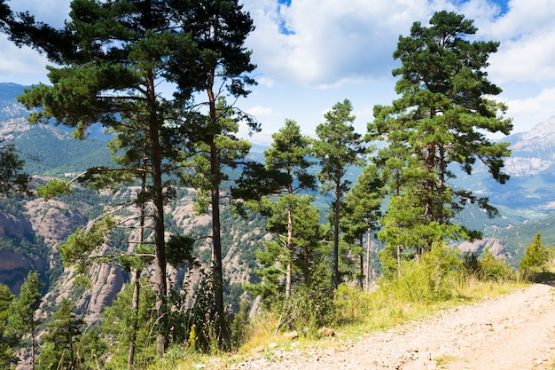

Environmental sustainability
Environmental sustainability is about ecological balance. For nearly two millennia, humans have been carbonizing our planet, which has contributed to global climate change.
Global Warming From Fossil Fuels
The last time carbon dioxide levels on our planet were as high as today was more than 4 million years ago. Increased emissions of greenhouse gases have led to a rapid and steady increase in global temperatures, which in turn is causing catastrophic events all over the world – from Australia and the US experiencing some of the most devastating bushfire seasons ever recorded, locusts swarming across parts of Africa, the Middle East and Asia, decimating crops, and a heatwave in Antarctica that saw temperatures rise above 20C for the first time
Scientists are constantly warning that the planet has crossed a series of tipping points that could have catastrophic consequences, such as advancing permafrost melt in Arctic regions, the Greenland ice sheet melting at an unprecedented rate, accelerating sixth mass extinction, and increasing deforestation in the Amazon rainforest, just to name a few.